在场景中移动时，它可以选取最近的反射探针（Reflection Probe），并将其作为自身反射的基础。你也可以设置场景在多个探针之间进行混合。
要创建反射探针，请在 Hierarchy 窗口中右键单击，然后选择 Light > Reflection Probe。
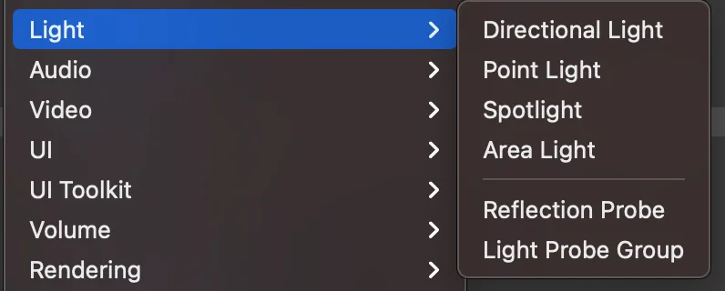
然后摆放探针的位置并调整其设置。探针放置正确、设置调整完毕后，单击 Bake 生成立方体贴图（cubemap）。
反射探针设置
下图展示了 FPS Sample 中使用的两个反射探针：The Inspection，一个位于机库内部，另一个位于外部。
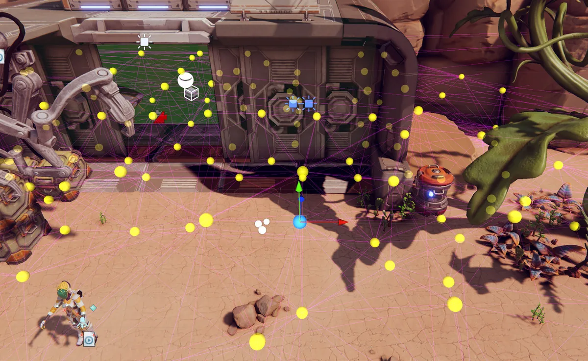
每个反射探针都会在其立方体贴图纹理中捕获周围环境的图像。
反射探针混合
混合（blending）是反射探针的一项出色功能。你可以通过 Renderer Asset Settings 面板启用混合。当选择 Forward+ 路径时，无论 Renderer Asset 中的设置如何，混合始终处于开启状态。
当反射物体从一个区域穿行到另一个区域时，混合会逐渐淡出一个探针的立方体贴图，同时淡入另一个探针的立方体贴图。这种渐进过渡避免了物体跨越区域边界时，某个特征鲜明的物体突然“弹出”到反射中的情况。
盒体投影（Box Projection）
通常情况下，反射立方体贴图被假定位于距任意给定物体无限远的位置。随着物体转动，可以看到立方体贴图的不同角度，但物体无法靠近或远离被反射的周围环境。这在室外场景中效果良好，但在室内场景中就会显露出局限。房间的内墙显然不在无限远处，当物体靠近墙壁时，墙壁的反射应该变得更大。
Box Projection 选项使你能在距探针有限的距离处创建反射立方体贴图，让物体根据自身与立方体贴图各面之间的距离显示不同大小的反射。周围立方体贴图的大小由探针的影响区域（zone of effect）决定，具体取决于其 Box Size 属性。例如，对于一个反射房间内部的探针，你应将大小设置为与房间的尺寸相匹配。
镜头光晕（Lens Flare）
URP 更新了创建镜头光晕的工作流程。配置它的第一步是创建 Lens Flare (SRP) Data 资源。在 Project 窗口中合适的 Assets 文件夹内右键单击，然后选择 Create > Lens Flare (SRP)。
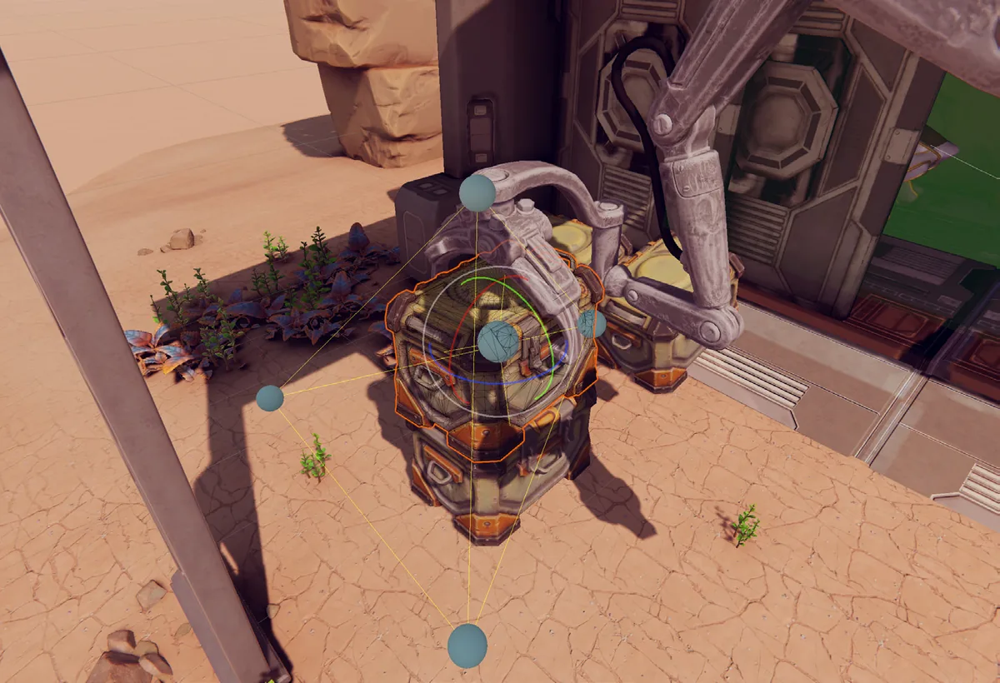
使用该资源来配置光晕的形状：将 Type 设置为 Circle、Polygon 或 Image 资源，并调整它们的 Tint 和 Intensity。
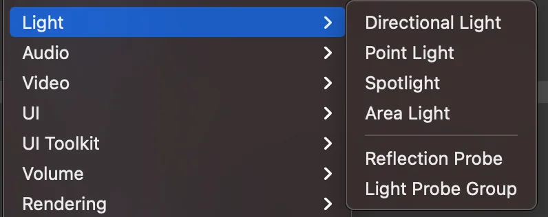
要渲染镜头光晕，请选择将产生光晕的光源，然后选择 Add Component > Rendering > Lens Flare (SRP)。
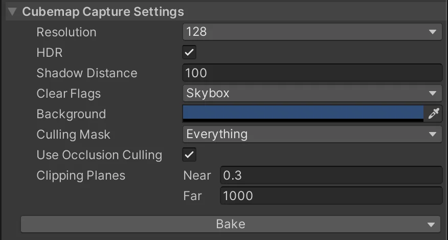
在该组件的 Settings 面板中（见下图），将你创建的 Lens Flare Data 资源指定给 Lens Flare Data 属性。
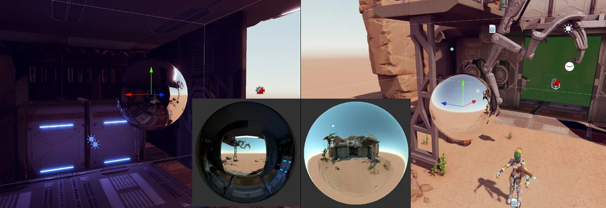
该系统非常灵活。
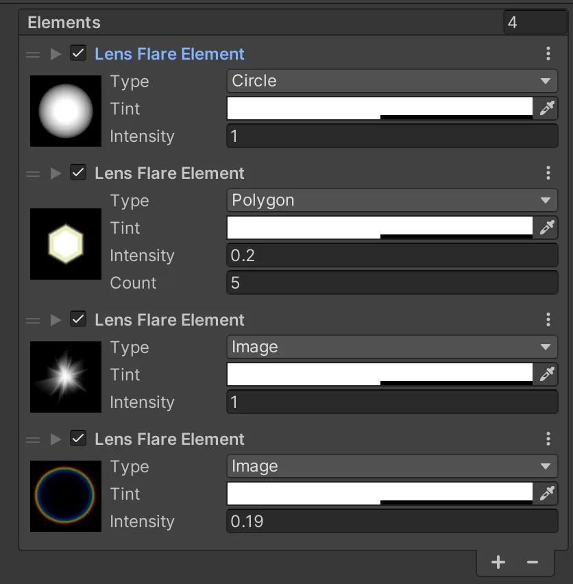
光晕（Light Halos）
URP 中的光源不提供 Draw Halo 选项，但可以很容易地用公告板（billboard）来模拟。另一种选择是设置球体的 alpha 透明度。下面的第一张图展示了这种着色器的 Shader Graph，第二张图展示了结果。有关使用 Shader Graph 创建此着色器的更多信息，请参阅 Additional tools 一章。
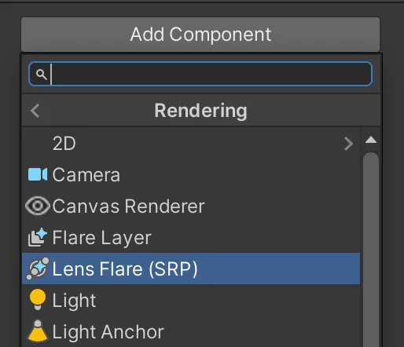
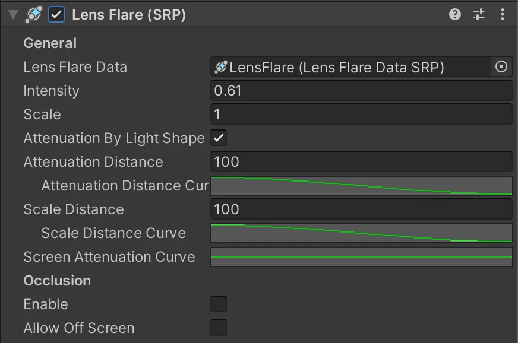
屏幕空间环境光遮蔽（Screen Space Ambient Occlusion）
由于环境光默认不考虑几何体，较高的环境光水平可能导致渲染结果不真实。在现实世界中，两个物体之间的狭窄缝隙通常比宽阔得多的缝隙更暗。环境光遮蔽（Ambient Occlusion）可以帮助你在 Unity 项目中处理这个问题。要在 URP 中使用它，请选择 URP Asset 正在使用的 Renderer，转到 Add Renderer Feature，然后选择 Screen Space Ambient Occlusion (SSAO)。
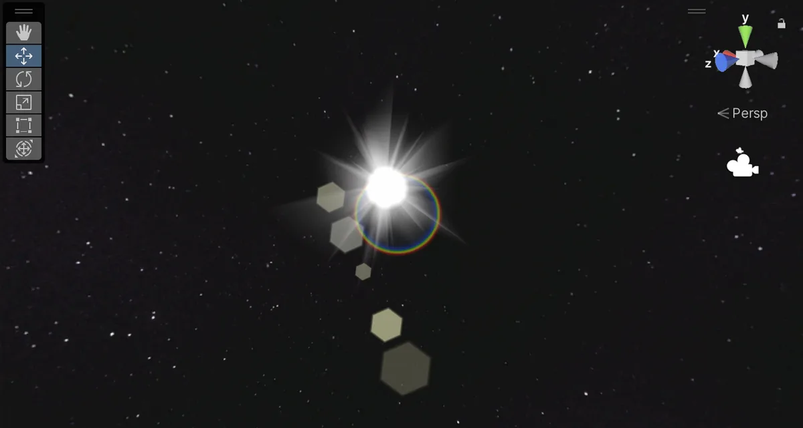
可以使用 SSAO 的默认设置，也可以按需调整：
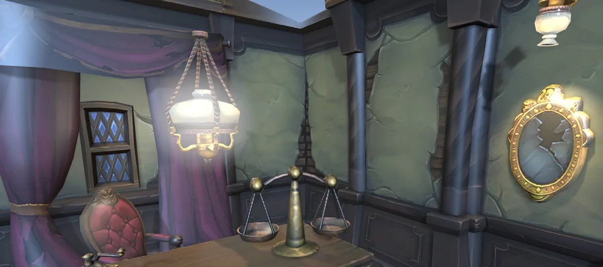
- Method：此属性定义 SSAO 效果使用的噪声类型。
- Intensity：此属性定义变暗效果的强度。
- Radius：当 Unity 计算环境光遮蔽值时，SSAO 效果会从当前像素出发，在该半径范围内对法线纹理采样。较低的 Radius 值可提升性能，因为 SSAO Renderer Feature 采样的像素更靠近源像素。
- Falloff Distance：SSAO 不会应用于距摄像机远于此距离的物体。在包含许多远处物体的场景中，较低的值可以提升性能。
- Direct Lighting Strength：此属性定义该效果在受直接光照照射区域的可见程度。
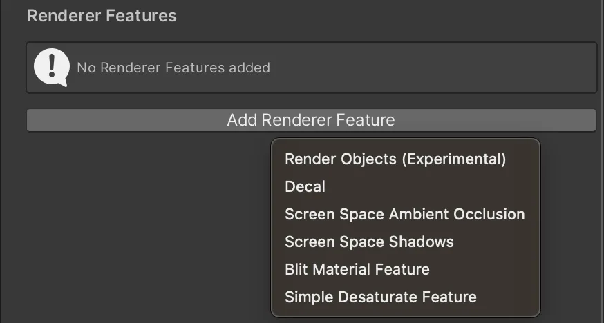
SSAO 会为狭窄的缝隙添加明暗变化。让我们看看下面三张图。
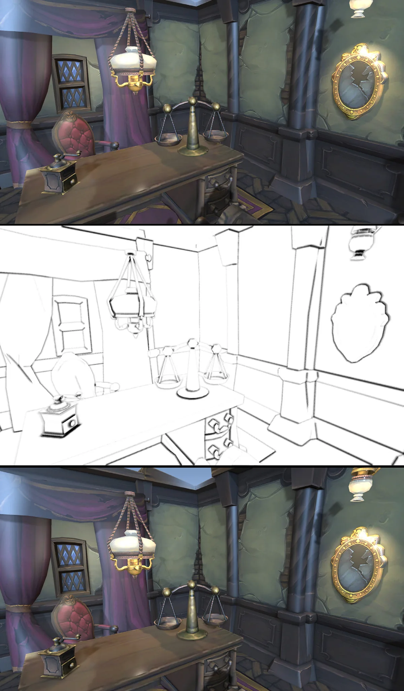
顶部的图像没有 SSAO。中间的图像显示了计算出的 SSAO，而底部的图像显示了 SSAO 的结果。请注意，研磨机和秤与桌面相接处的边缘更强。
SSAO 是一种后处理技术，其细节将在本指南后面部分介绍。